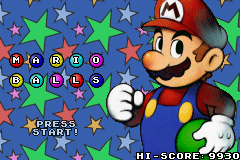
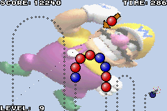

Mario Balls
[GBAX2005 edition]


Story:
Once upon a time, a young lovely princess was kidnapped by an evil... hmmm, well... sorry, I can't remember the details! Anyway, I guess nobody cares.
Actually, the aim of the game is to destroy all the balls that appear on the screen using your Ball Launcher. Shoot your ball on the ones that follow the path: touching 2 balls or more of the same color will make them disappear; if you miss your target and bump in balls of different colors, yours will be added to the others. If the balls reach the end of the path and finally touch the little bomb, all of them will be removed and replaced by new ones (you'll even have some more balls to destroy, so try your best to avoid that). But if you succeed to destroy all the balls, you'll proceed to the next stage... To make things more challenging, a timer is activated as soon as the game starts: you'll loose if it reaches 0, so be fast! Hopefully you'll gain some time and eventually finish all the 36 levels of the game!
Controls:
- [left] & [right]: to rotate the Ball Launcher,
- [left] & [right] + [L] or [R]: to rotate the Ball Launcher slowly (to adjust your shoot),
- [A]: to shoot the ball which is on the Ball Launcher,
- [B]: to make the balls on the path go faster,
- [start]: pause.
Scoring*:
- 3 balls: 1 point,
- 4 balls: 2 points,
- 5 balls: 5 points,
- 6 balls: 10 points,
- 7 balls: 20 points,
- 8 balls: 50 points,
- 9 balls: 100 points + 5 seconds,
- 10 balls: 200 points + 5 seconds,
- 11 balls or more: 500 points + 5 seconds,
- next level: 1000 points + 30 seconds.
* The best score and the highest level reached are saved on the cartridge, they are displayed on the title screen.
Tips:
- You can throw away balls that bother you: just shoot them outside of the screen!
- The only opponent you have is the time; don't worry too much if the balls reach the end of the path (you'll see it is very difficult to avoid in the advanced stages). However it is always good to destroy as many balls as you can, even when you have no hope to remove them all: you will restart the level with fewer balls and so have a chance to succeed (only 10 new balls are added when the little bomb is reached).
- Do not hesitate to speed up the balls to save time (using [B]).
- Only balls already on the screen can be destroyed: it is sometimes better to wait a little for a complete group of balls to appear before shooting (it would be pity that new balls have the same color as the ones you just destroyed but haven't be removed because you shot too early!).
- Beware of the black ball: it has strange effects (bonus or penalties)! See the list below.
- It is said a cheat code exists...
- Note that when the splash screen is displayed (right after the GBA startup), you can move the spotlight using the arrow keys (yes, I know it is an useless feature).
- You can change the backgrounds by holding [select] at the time you start the game (these alternate backgrounds are also automatically applied from time to time, randomly).
Black ball effects:
Bad (penalties):
- Disable Ray: remove the ray that the Ball Launcher normally displays,
- Reverse Shoot: the next ball will be shot in the opposite direction,
- Slow Motion: balls shot by the Ball Launcher will move slowly,
- Crazy Control: the [left] and [right] keys are swapped,
- Hide Path: the path is hidden,
- Color Panic: all the colors are modified,
- Twister: the Ball Launcher self rotates till a ball is shot,
- More Balls: 10 balls are added.
Good (bonus):
- Time Gift: give 30 seconds,
- Sort Balls: sort the balls according to their color,
- Kill Color: remove all the balls of a given color,
- Basic Control: remove the effects "Disable Ray", "Slow Motion" and "Crazy Control",
- Warp Zone: immediately go to the next level.
Path list*:
- Arrobas,
- Big Dick,
- Escalator,
- Heart,
- Highway,
- Hills,
- In-Out,
- Jump,
- Little Flower,
- MTR,
- Mushroom,
- No Exit,
- River,
- Snail,
- Snake,
- Waves,
- www.playeradvance.org.
* Most of the paths are used for several different levels.
Greetings:
I'd like to thank my friends of Player Advance, in particular greeeg, who gave me the Mario showed in the title screen, Mollusk, who provided me with a lot of sound resources, and all the great coders who kept me motivated (nes, Arcadia, nagame, Yodajr, etc.).
I recommend the following web resources:
- Player Advance,
- VisualHAM,
- AFDAC,
- TONC,
- gbax.com,
- gbadev.org,
- PDroms.
Note regarding the music and sounds:
- Title screen: Benefit's Warp to World 6-9,
- In-game music & sounds: misc. materials found on the web.
Additional info:
For those who wonder if the idea of Mario Balls is mine... actually not really. The original concept is from the arcade video game "Puzz Loop", developed by Mitchell in 1998. I only played it once and don't remember the details, but I found it very interesting to code a sequel (believe me, it is not so simple!).
Why did I choose Mario as the theme of the game? Just because I like Nintendo, their games and hardware, and so wanted to be part of Mario's Story!
Contacts:
Nicolas ROBERT [NRX]
- Official Mario Balls thread (Player Advance forum),
- E-mail.